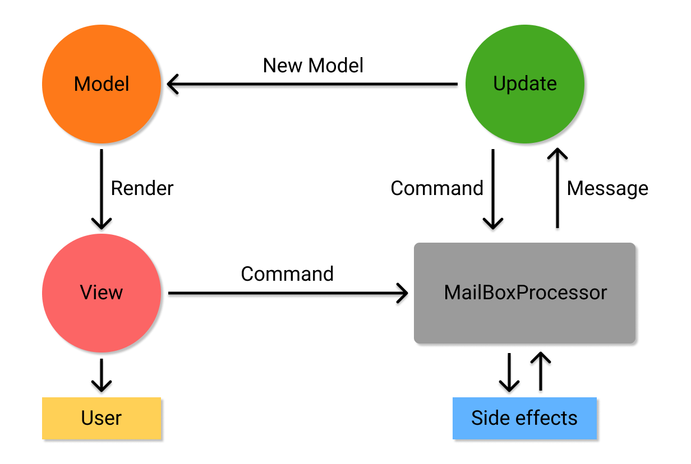

val add : x:int -> y:int -> int
Full name: safefsharp.add
Full name: safefsharp.add
val x : int
val y : int
val addTen : (int -> int)
Full name: safefsharp.addTen
Full name: safefsharp.addTen
val result : int
Full name: safefsharp.result
Full name: safefsharp.result
val exec : x:'a * y:'b -> f:('a -> 'b -> 'c) -> 'c
Full name: safefsharp.exec
Full name: safefsharp.exec
val x : 'a
val y : 'b
val f : ('a -> 'b -> 'c)
val result1 : int
Full name: safefsharp.result1
Full name: safefsharp.result1
val result2 : string
Full name: safefsharp.result2
Full name: safefsharp.result2
val sprintf : format:Printf.StringFormat<'T> -> 'T
Full name: Microsoft.FSharp.Core.ExtraTopLevelOperators.sprintf
Full name: Microsoft.FSharp.Core.ExtraTopLevelOperators.sprintf
namespace Microsoft.FSharp
namespace Microsoft.FSharp.Data
namespace Microsoft.FSharp.Data.UnitSystems
namespace Microsoft.FSharp.Data.UnitSystems.SI
namespace Microsoft.FSharp.Data.UnitSystems.SI.UnitSymbols
type Direction =
| North
| South
| East
| West
Full name: safefsharp.Direction
| North
| South
| East
| West
Full name: safefsharp.Direction
union case Direction.North: Direction
union case Direction.South: Direction
union case Direction.East: Direction
union case Direction.West: Direction
type Weather =
| Cold of temperature: float<C>
| Sunny
| Wet
| Windy of Direction * windspeed: float<m/s>
Full name: safefsharp.Weather
| Cold of temperature: float<C>
| Sunny
| Wet
| Windy of Direction * windspeed: float<m/s>
Full name: safefsharp.Weather
union case Weather.Cold: temperature: float<C> -> Weather
Multiple items
val float : value:'T -> float (requires member op_Explicit)
Full name: Microsoft.FSharp.Core.Operators.float
--------------------
type float = System.Double
Full name: Microsoft.FSharp.Core.float
--------------------
type float<'Measure> = float
Full name: Microsoft.FSharp.Core.float<_>
val float : value:'T -> float (requires member op_Explicit)
Full name: Microsoft.FSharp.Core.Operators.float
--------------------
type float = System.Double
Full name: Microsoft.FSharp.Core.float
--------------------
type float<'Measure> = float
Full name: Microsoft.FSharp.Core.float<_>
[<Measure>]
type C = Data.UnitSystems.SI.UnitNames.coulomb
Full name: Microsoft.FSharp.Data.UnitSystems.SI.UnitSymbols.C
type C = Data.UnitSystems.SI.UnitNames.coulomb
Full name: Microsoft.FSharp.Data.UnitSystems.SI.UnitSymbols.C
union case Weather.Sunny: Weather
union case Weather.Wet: Weather
union case Weather.Windy: Direction * windspeed: float<m/s> -> Weather
[<Measure>]
type m = Data.UnitSystems.SI.UnitNames.metre
Full name: Microsoft.FSharp.Data.UnitSystems.SI.UnitSymbols.m
type m = Data.UnitSystems.SI.UnitNames.metre
Full name: Microsoft.FSharp.Data.UnitSystems.SI.UnitSymbols.m
[<Measure>]
type s = Data.UnitSystems.SI.UnitNames.second
Full name: Microsoft.FSharp.Data.UnitSystems.SI.UnitSymbols.s
type s = Data.UnitSystems.SI.UnitNames.second
Full name: Microsoft.FSharp.Data.UnitSystems.SI.UnitSymbols.s
val weather : Weather
Full name: safefsharp.weather
Full name: safefsharp.weather
val speed : float<m/s>
val temp : float<C>
active recognizer High: float<m/s> -> Choice<unit,unit,unit>
Full name: safefsharp.( |Low|Medium|High| )
Full name: safefsharp.( |Low|Medium|High| )
val data : (bool * int) list
Full name: safefsharp.data
Full name: safefsharp.data
Multiple items
module List
from Microsoft.FSharp.Collections
--------------------
type List<'T> =
| ( [] )
| ( :: ) of Head: 'T * Tail: 'T list
interface IEnumerable
interface IEnumerable<'T>
member GetSlice : startIndex:int option * endIndex:int option -> 'T list
member Head : 'T
member IsEmpty : bool
member Item : index:int -> 'T with get
member Length : int
member Tail : 'T list
static member Cons : head:'T * tail:'T list -> 'T list
static member Empty : 'T list
Full name: Microsoft.FSharp.Collections.List<_>
module List
from Microsoft.FSharp.Collections
--------------------
type List<'T> =
| ( [] )
| ( :: ) of Head: 'T * Tail: 'T list
interface IEnumerable
interface IEnumerable<'T>
member GetSlice : startIndex:int option * endIndex:int option -> 'T list
member Head : 'T
member IsEmpty : bool
member Item : index:int -> 'T with get
member Length : int
member Tail : 'T list
static member Cons : head:'T * tail:'T list -> 'T list
static member Empty : 'T list
Full name: Microsoft.FSharp.Collections.List<_>
val filter : predicate:('T -> bool) -> list:'T list -> 'T list
Full name: Microsoft.FSharp.Collections.List.filter
Full name: Microsoft.FSharp.Collections.List.filter
val fst : tuple:('T1 * 'T2) -> 'T1
Full name: Microsoft.FSharp.Core.Operators.fst
Full name: Microsoft.FSharp.Core.Operators.fst
val sortByDescending : projection:('T -> 'Key) -> list:'T list -> 'T list (requires comparison)
Full name: Microsoft.FSharp.Collections.List.sortByDescending
Full name: Microsoft.FSharp.Collections.List.sortByDescending
val snd : tuple:('T1 * 'T2) -> 'T2
Full name: Microsoft.FSharp.Core.Operators.snd
Full name: Microsoft.FSharp.Core.Operators.snd
val take : count:int -> list:'T list -> 'T list
Full name: Microsoft.FSharp.Collections.List.take
Full name: Microsoft.FSharp.Collections.List.take
val map : mapping:('T -> 'U) -> list:'T list -> 'U list
Full name: Microsoft.FSharp.Collections.List.map
Full name: Microsoft.FSharp.Collections.List.map
Multiple items
val string : value:'T -> string
Full name: Microsoft.FSharp.Core.Operators.string
--------------------
type string = System.String
Full name: Microsoft.FSharp.Core.string
val string : value:'T -> string
Full name: Microsoft.FSharp.Core.Operators.string
--------------------
type string = System.String
Full name: Microsoft.FSharp.Core.string
val head : list:'T list -> 'T
Full name: Microsoft.FSharp.Collections.List.head
Full name: Microsoft.FSharp.Collections.List.head
SAFE Web development with F#

Mikhail Smal
@ Veeam Geek Hub 28.03.2019
My name is Mikhail and
I ❤️ F#
What about you?
Why F#
-
Functional language
- Immutability
- Pattern matching
- Static typing
- Algebraic data-types
- Domain Driven Design
Domain Modeling Made Functional

Scott Wlaschin
Why F# is the best enterprise language
https://fsharpforfunandprofit.com/posts/fsharp-is-the-best-enterprise-language/
Why F#
-
Functional language
- Immutability
- Pattern matching
- Static typing
- Algebraic data-types
- Domain Driven Design
- Cross-platform .NET Core
- Single language for Backend/Frontend
- Type providers
- Awesome community ️❤️
Functions
1: 2: 3: 4: 5: 6: 7: 8: 9: 10: 11: |
|
Type system
1: 2: 3: 4: 5: 6: 7: 8: 9: 10: 11: 12: 13: 14: 15: 16: |
|
Pattern matching
1: 2: 3: 4: 5: 6: 7: |
|
Pipelines
1: 2: 3: 4: 5: 6: 7: 8: |
|

The SAFE stack is an open-source, free, flexible end-to-end, functional-first stack for cloud-ready web applications that emphasizes type-safe programming.
Saturn |
Azure |
Fable |
Elmish |
 Saturn
Saturn
A modern web framework that focuses on developer productivity, performance, and maintainability
Rings
- Kestrel and ASP.NET Core
- Giraffe
Moons
- Dapper
- Simple.Migrations
Alternatives
- Giraffe
- ASP.NET Core
- Suave
- Freya
Saturn template
1: 2: |
|
Saturn cli-tool
1: 2: |
|
 Microsoft Azure
Microsoft Azure
- Top 3 Cloud hosting platforms
- Native .NET environment
Alternatives
- Amazon Web Services
(AWS) - Google Cloud Platform
(GCP)
- Any other hosting
SAFE in Docker
mcr.microsoft.com/dotnet/core/sdk:2.2mcr.microsoft.com/dotnet/core/aspnet:2.2mcr.microsoft.com/dotnet/core/runtime:2.2-mcr.microsoft.com/dotnet/core/sdk:2.2-alpinemcr.microsoft.com/dotnet/core/aspnet:2.2-alpinemcr.microsoft.com/dotnet/core/runtime:2.2-alpine
Fable
The compiler that emits JavaScript you can be proud of!
- F# -> JavaScript compiler
- JavaScript as runtime
- Simple interop with JavaScript
- ReactJS and React Native
- SSR w/o Node.js
Alternatives
- WebSharper
- Bolero
Fable compiler
F#
Fable
Babel
ECMAScript 5
 Elmish
Elmish
- Borrowed from Elm language
- MVU Architecture
- Hot module replacement
Model-View-Update
Client-Server communtication
Fable.Remoting
Type-safe communication layer for F# Apps
- RPC-style
- Adapters for all SAFE servers and more
Elmish.Bridge
A bridge between server and client using websockets
- Web sockets
- Bi-directional communication
FAKE
A DSL for build tasks and more
- Like MAKE, but F#
- F# as script language
SAFE Pre-requisites
- .NET Core SDK 2.x
- Node.js 8.x+
- Yarn/NPM
- FAKE 5 as a dotnet global tool
- Mono (for macOS/Linux only)
SAFE Template
1: 2: 3: 4: 5: 6: |
|
DEMO
Wrapping up
- Performance thanks to .NET Core
- Full-stack out-of-box
- Single type-safe functional language